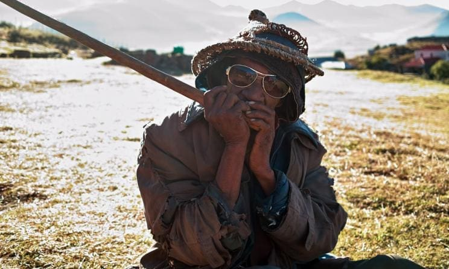
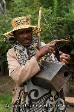
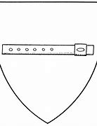
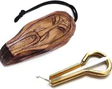
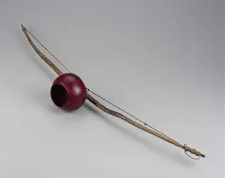
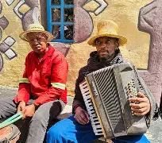
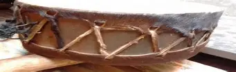

The lesiba is regarded as Lesotho’s national musical instrument, often referred to as the "herd boy’s gramophone." It is a stringed-wind instrument made from a flattened quill attached to a sinew string stretched over a piece of hardwood. The player creates sound by blowing into the quill, causing the string to vibrate against the wood. This instrument is known for its emotive sound and is often described as personal, as players adjust it to suit their vocal styles.
Also known as the sekhankula, the mamokhorong is a traditional bow instrument played by herdboys. It is made from a flexible stick and a string, producing a unique sound that complements the lesiba in Basotho music. This instrument is often used for personal enjoyment and is integral to the musical practices of the Basotho people.
This is a type of flute traditionally played by herding boys. It adds a melodic layer to Basotho music and is often associated with pastoral life.
A jaw harp that resembles an extended version of the traditional instrument, played using the mouth. It is typically used in communal settings and adds to the rhythmic elements of Basotho music.
A stringed instrument played primarily by women, contributing to the diverse soundscape of Basotho music.
The koriana is the Accordion used in Basotho musical traditions, central to genres like famo and focho, blending storytelling, dance, and social expression.
The moropa is a traditional Southern African drum widely used among the Basotho in Lesotho and the Northern Sotho (Pedi) people in South Africa, serving both musical and cultural functions.
